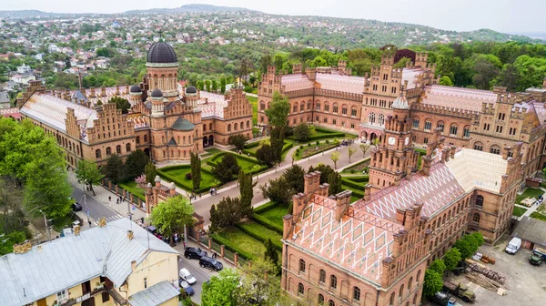
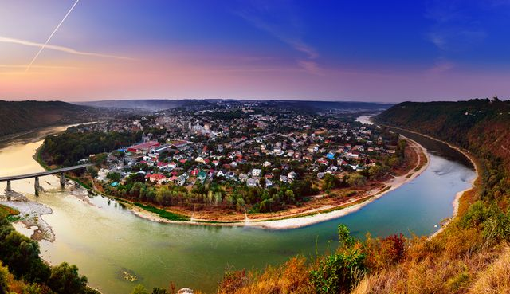
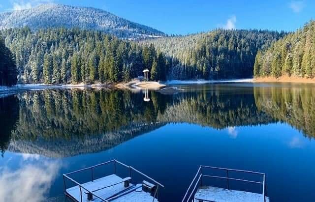
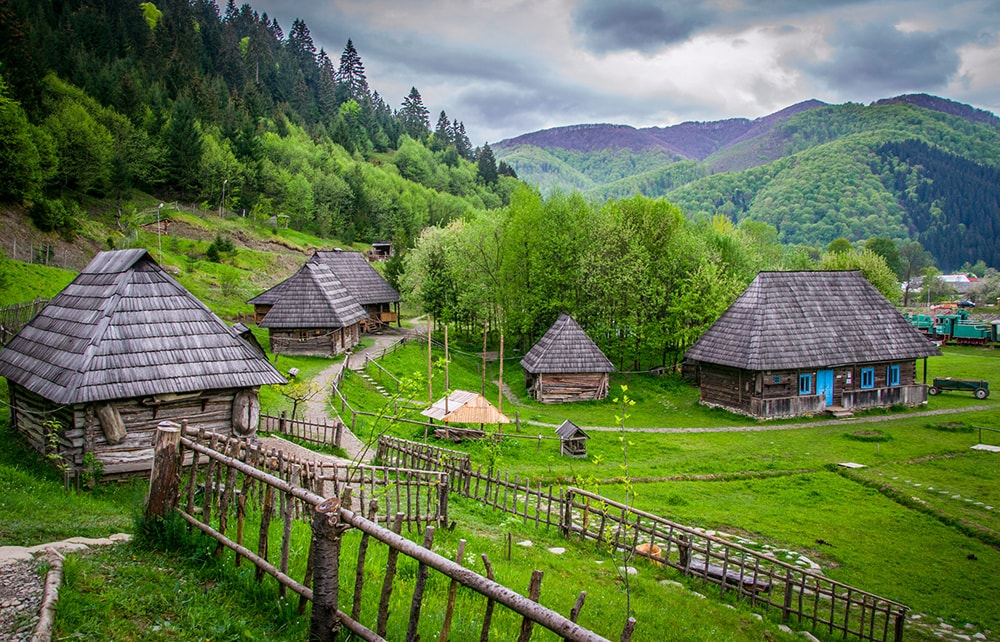

Чернівці

Це місто називають "маленьким Віднем та Парижем". За розміром воно дійсно
належить до невеличких міст, а Відень та Париж нагадує своєю неймовірною
архітектурою.
Піші прогулянки в Чернівцях – улюблене заняття тамтешніх мешканців та туристів.
І це не дивно, адже місто налічує десятки парків і затишних вуличок, де завжди
можна перепочити та насолодитися атмосферою. Одна з таких – пішохідна вулиця
Ольги Кобилянської, вздовж якої розмістилося багато крихітних кафе та кав'ярень.
Заліщики

Це містечко-півострів вважається одним із найкрасивіших міст Європи. Воно і не
дивно, адже такою красою можуть похизуватися лише два місця у світі: Мозель у
Франції та Підкова мармурового каньйону у США. Заліщики розкинулися у глибокому яру Дніпра на
південно-західному Поділлі, ніби
на півострові. Якщо вибратись на гору, що розташована напроти моста, то можна
побачити вражаючу панораму. За історичними дослідженнями О. Тура перші письмові
згадки про Заліщики відносять до 1340 року. Також на території міста знайдено
старожитності пізнього палеоліту, трипільської, липицької, ранньослов'янської та
давньоруської культур.
Озеро Синевир

Район Національного природного парку «Синевир» - це казковий куточок прекрасної природи. Це місце сили і
найзагадковіша визначна пам'ятка Західної України. Саме тут, захована в густих хвойних лісах Карпат,
знаходиться справжня природна перлина і одна з візитівок смарагдових Карпат – озеро Синевир, яке вражає
своїми кришталево чистими і глибокими водами.
Мальовнича Колочава

Неподалік від Синевиру знаходиться ще одна туристична родзинка Закарпаття. Мальовнича Колочава - одне з
найдовших сіл в Україні, його довжина складає 15 км. Але знаменита Колочава не лише через це. Карпатська
глибинка може похвалитися мінеральними джерелами, неймовірними краєвидами на гори та давньою історією, адже
перша письмова згадка про нього датується 1463 р.